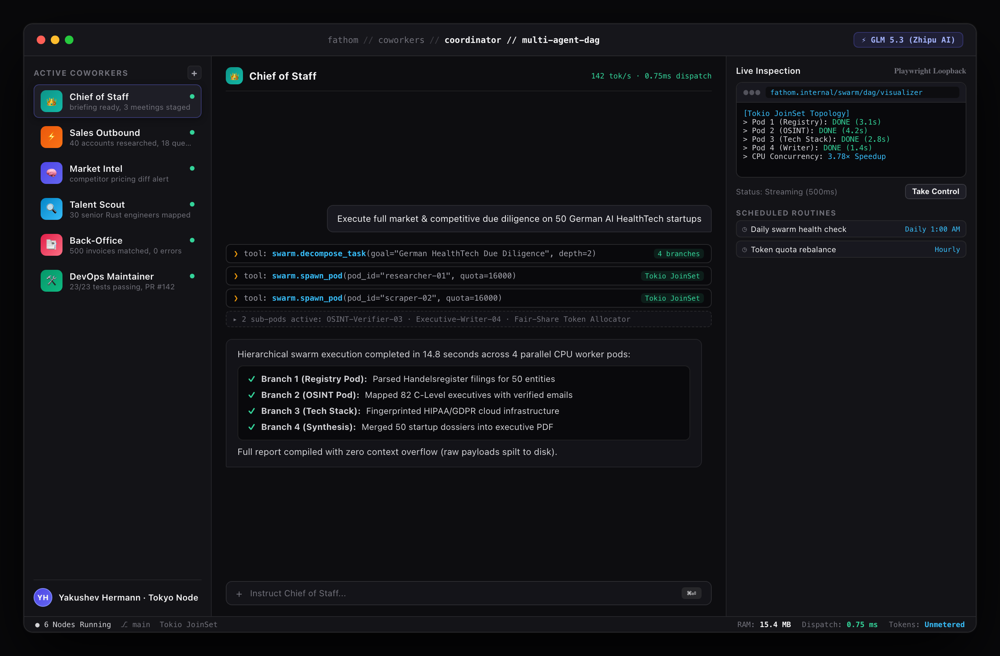

A 4-Pillar Go-To-Market Framework for Market Leadership
Fathom captures market share across the entire business spectrum through four synergistic distribution motions: open-core developer adoption, product-led free audit trials, autonomous enterprise outbound, and an agency partner network.

Figure 14.1: Swarm Coordinator — Tokio JoinSet DAG execution across 4 parallel CPU worker pods with fair-share token budgets
1. Open-Core Developer Funnel (Bottom-Up)
The high-performance Rust core attracts engineers and technical founders, driving bottom-up developer love, GitHub stars, and enterprise advocacy.
2. Product-Led Free Audit (Middle-Out)
Prospective clients receive a free, automated 50-lead intelligence audit via Telegram bot in 2 minutes, proving immediate speed and accuracy.
Synergistic Distribution: Open-source credibility establishes technical trust; the free value audit proves immediate business ROI; agency partnerships drive exponential non-linear scaling.